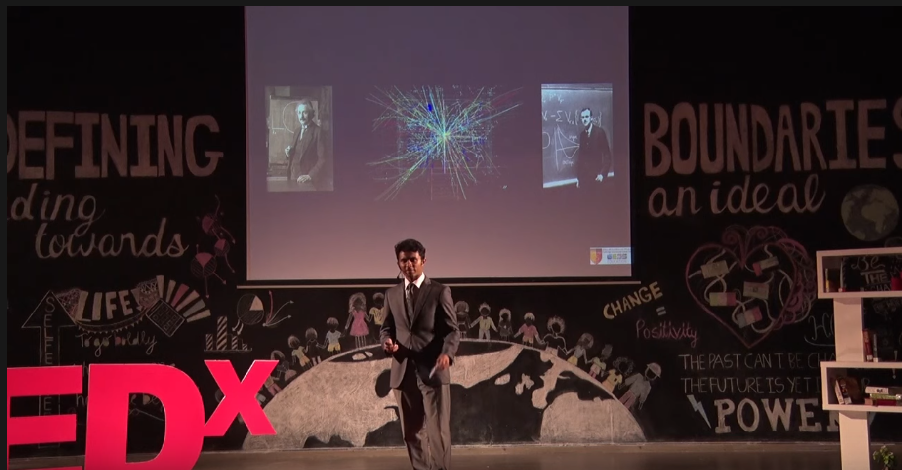

About Me
About Me
Hello! My name is Emile Timothy. I'm a sophomore Computer
Science major at Caltech from Dubai and I am passionate about
creating new technologies. On campus, I run for the collegiate
cross country and track teams, run the Caltech Arnis Club and
Caltech Boba Club as the Vice President, and am a member of
the Caltech Data Science team. I am also involved with Title IX
advocacy, the International Student office programs and the
Physics11 class through which I had a summer research fellowship
with Caltech LIGO and Professor Rana Adhikari through the
Tombrello and Brewer fellowships.
My other interests include working on research or coding projects,
playing the Piano, thinking about wild hypothetical scenarios, and
exploring boba stores and trails around Pasadena and Los Angeles.
I occasionally post pictures and share my thoughts on Instagram
(@emiletimothy).
A general list of my accomplishments and the projects I've worked
on can be found
here.

Check out my
TED talk
that explores the possibility of time-travel
if you'd like!
What can I do?
Computing Skills:
Algorithmic Design, Designing Computing Systems, Compiler Design
Complexity theory, Decidability and Tractability, Systems Architecture
Machine Learning, Theoretical Computing (NP-reductions), Discrete Math
Languages:
Advanced: C, Python, JS, MATLAB, Mathematica
Intermediate: Java, C++, C#, SQL
Basic: OCaml
Python libraries: Scipy, Matplotlib, NetworkX, TensorFlow, NLP